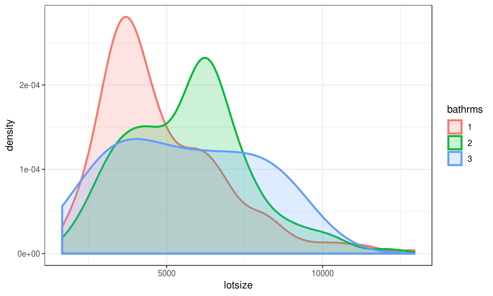

2019-01-16
*** Stars?## ## Call: ## lm(formula = mpg ~ wt + hp, data = mtcars) ## ## Residuals: ## Min 1Q Median 3Q Max ## -3.941 -1.600 -0.182 1.050 5.854 ## ## Coefficients: ## Estimate Std. Error t value Pr(>|t|) ## (Intercept) 37.22727 1.59879 23.285 < 2e-16 *** ## wt -3.87783 0.63273 -6.129 1.12e-06 *** ## hp -0.03177 0.00903 -3.519 0.00145 ** ## --- ## Signif. codes: 0 '***' 0.001 '**' 0.01 '*' 0.05 '.' 0.1 ' ' 1 ## ## Residual standard error: 2.593 on 29 degrees of freedom ## Multiple R-squared: 0.8268, Adjusted R-squared: 0.8148 ## F-statistic: 69.21 on 2 and 29 DF, p-value: 9.109e-12
Estimate.Estimate.A Statistical Model is a set of assumptions about how the data have been generated. It formally describes a data-generating process (DGP)
Minimal Requirements + Additional Assumptions => NORMAL Linear Regression Model.
library(ScPoEconometrics)
launchApp("estimate")
library(ScPoEconometrics)
launchApp("standard_errors_simple")
library(ScPoEconometrics)
launchApp("standard_errors_changeN")
## ## Call: ## lm(formula = price ~ bathrms, data = Housing) ## ## Residuals: ## Min 1Q Median 3Q Max ## -77225 -15271 -2510 11704 102729 ## ## Coefficients: ## Estimate Std. Error t value Pr(>|t|) ## (Intercept) 32794 2694 12.17 <2e-16 *** ## bathrms 27477 1952 14.08 <2e-16 *** ## --- ## Signif. codes: 0 '***' 0.001 '**' 0.01 '*' 0.05 '.' 0.1 ' ' 1 ## ## Residual standard error: 22880 on 544 degrees of freedom ## Multiple R-squared: 0.267, Adjusted R-squared: 0.2657 ## F-statistic: 198.2 on 1 and 544 DF, p-value: < 2.2e-16
library(dplyr) # add residuals to the data Housing$resid <- resid(hlm) Housing %>% group_by(bathrms) %>% summarise(mean_of_resid=mean(resid))
## # A tibble: 4 x 2 ## bathrms mean_of_resid ## <dbl> <dbl> ## 1 1 -118. ## 2 2 955. ## 3 3 -11195. ## 4 4 32298.
lotsizesurface in the data, which would be an even better candidate)lotsize is correlated with bathrooms, we cannot make our ceteris paribus claims!bathrooms, you tend to also increase lotsize!! 👊lotsize## ## Call: ## lm(formula = price ~ bathrms + lotsize, data = Housing) ## ## Residuals: ## Min 1Q Median 3Q Max ## -60752 -12532 -1674 10514 92931 ## ## Coefficients: ## Estimate Std. Error t value Pr(>|t|) ## (Intercept) 1.008e+04 2.810e+03 3.588 0.000364 *** ## bathrms 2.281e+04 1.703e+03 13.397 < 2e-16 *** ## lotsize 5.575e+00 3.944e-01 14.136 < 2e-16 *** ## --- ## Signif. codes: 0 '***' 0.001 '**' 0.01 '*' 0.05 '.' 0.1 ' ' 1 ## ## Residual standard error: 19580 on 543 degrees of freedom ## Multiple R-squared: 0.4642, Adjusted R-squared: 0.4622 ## F-statistic: 235.2 on 2 and 543 DF, p-value: < 2.2e-16
